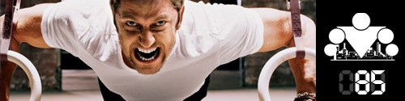

Вот и закончилась ещё одна неделя в ПРОДВИНУТОМ блоке, а вместе с ней мы стали на 7 дней ближе к новому году, а значит и к окончанию нашей программы. Но придаваться ностальгии и праздничному веселью ещё рано! Впереди 2 недели убойных тренировок, но сначала надо подвести итоги того, что мы узнали за последнее время:
День 78. Продвинутая техника №5
День 79. Тяжелая тренировка (груди, спины, рук, плеч и т.д.)
День 80. Величина нагрузки физических упражнений (Часть I)
День 81. Величина нагрузки физических упражнений (Часть II)
День 82. Травмы на тренировке
День 83. Направление вектора силы
День 84. Потребление vs. Созидание
Этот день должен был наступить. И вот он наступил. Сегодня первый день последней недели ПРОДВИНУТОГО блока, а это значит, что пришло время подвести итоги всего того, чему вы научились за это время. Как говорится, есть время сеять, и есть время пожинать плоды. Погнали!
Памятка:
Я понимаю, что очень многим может быть по-началу тяжело вносить элементы фристайла в свои тренировки, тем более, что последние почти 100 дней мы тренировались по круговой схеме. Поэтому я предлагаю следующее решение.
На этой неделе каждую свою тренировку начинайте с разминки, затем пробуйте что-нибудь из фристайла, затем делайте круги (если без них не можете никак или фристайлом не получается, пока что, дать достаточную нагрузку). Вы так же можете использовать фристайл во время выполнения кругов, если хватает сил.
(Как вы уже в курсе, у меня была просто дикая минувшая неделя, поэтому видео к посту из прошлого осеннего запуска ;)
Итак, фристайл. Фристайл - это суть воркаута, без фристайла воркаут будет всего лишь набором элементов и продвинутой версией ОФП. Но фристайл превращает тренировки в нечто большее, в нечто совершенно иное. Чтобы понять дух воркаута, нужно научиться фристайлить. Потому что как только вы начнете фристайлить, то все сомнения по поводу того, чем воркаут отличается от ГТО или ОФП отпадут сами собой. Поверьте мне. Да и просто весело и интересно это к тому же ;)
Небольшой фристайл от Биста с использованием техники перемещения в пространстве:
А вот ещё немного фристайла от бывшего мастера нашего сайта -
Niko81:
В общем, думаю, суть вы поняли =) Ну и ещё парочку классических видео:
Фристайл - это НЕ показуха и НЕ трюки, это просто НОВЫЙ СПОСОБ тренироваться. Новый подход к привычным упражнениям, который делает их не только интереснее, но и эффективнее ;)
Если вы успешно справились со всеми продвинутыми днями, то на данный момент у вас уже достаточно сил и знаний, для того, чтобы попробовать пофристайлить. Это может быть небольшая комбинация, но все мы с чего-то начинали. Так что, отбросьте свои сомнения и вперед! Ну а самые дерзкие могут выкладывать свои видео в ответах к данной теме ;)
======> День 86. Как составить программу тренировок (теория)